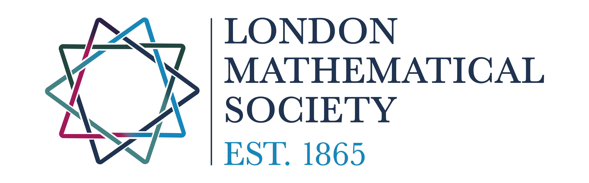

Sponsors

Jane Street
Jane Street is a global trading firm with offices in London, New York, Hong Kong, Singapore, and Amsterdam. Our approach is rooted in technology and rigorous quantitative analysis, but our success is driven by our people.
We are always recruiting top candidates and we invest heavily in teaching and training. Learn more about us and our roles at our programs and events. No finance experience needed.
We look for a passion for critical thinking and creative problem-solving – people like you!
Learn more
London Mathematical Society
The London Mathematical Society (LMS), founded in 1865, is the UK’s learned society for mathematics, dedicated to advancing mathematical knowledge, supporting nathematicians and fostering a vibrant community.
Through publications, grants, conferences, and educational initiatives, the LMS supports mathematicians at all stages of their careers.
Student members gain access to leading mathematical journals, networking opportunities, workshops and lectures, as well as resources that support engagement and opportunities to advance mathematical education and research.
Learn moreSupport MIMUC 2027
We are currently seeking sponsors for the 2027 conference. MIMUC provides a unique opportunity to connect with talented mathematics students from across the UK.
If your organisation is interested in supporting the event, please get in touch.
Become a Sponsor